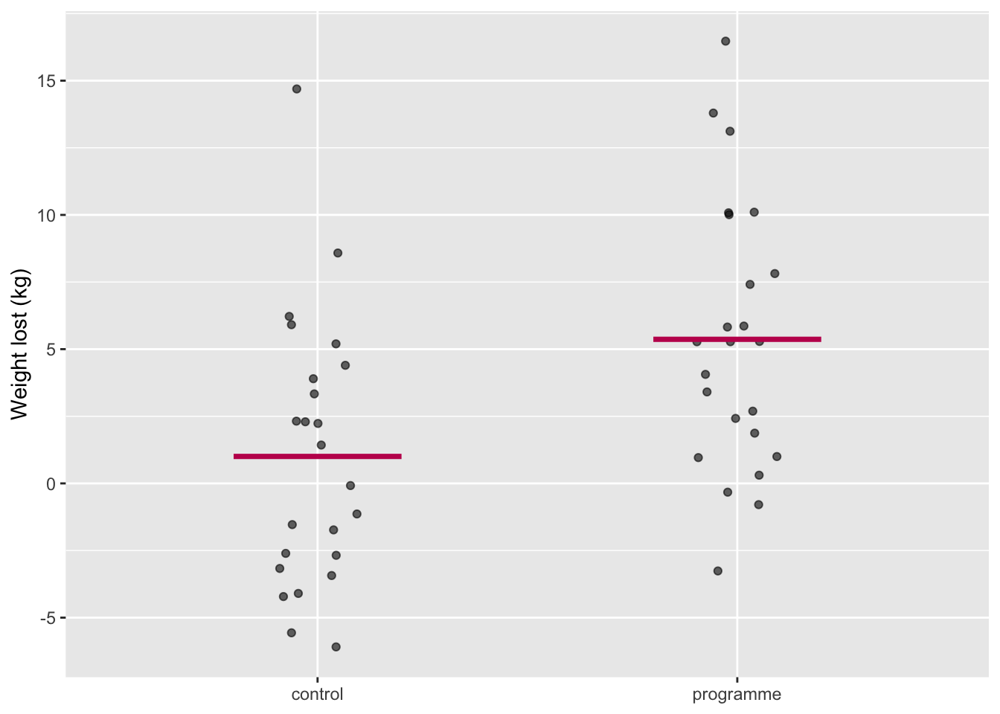
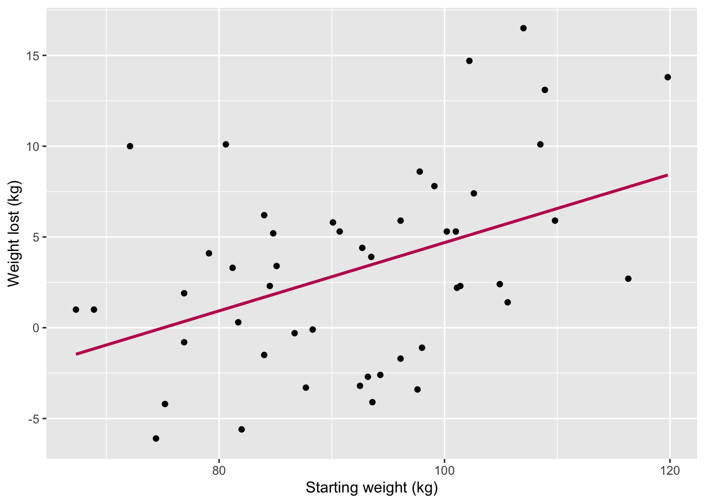
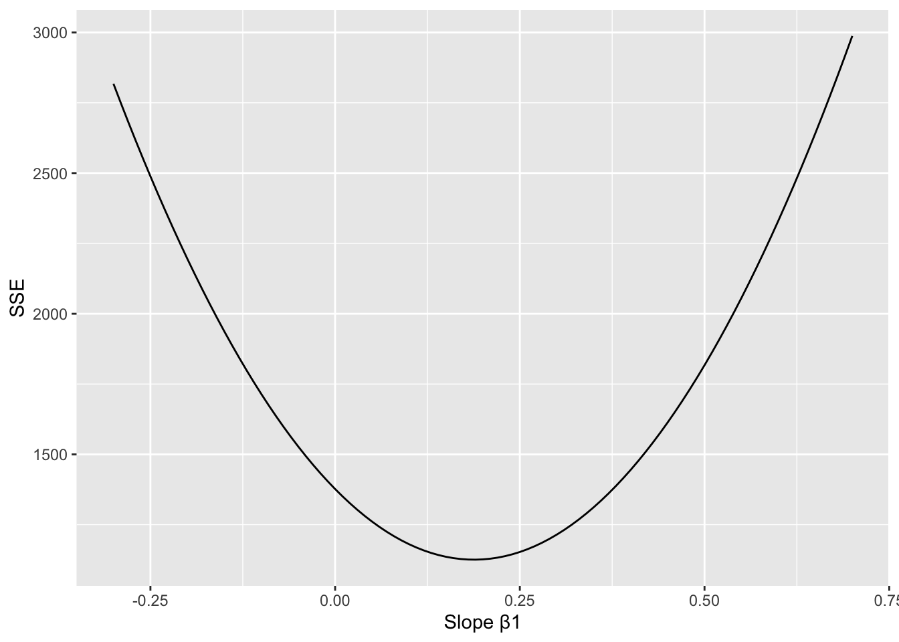
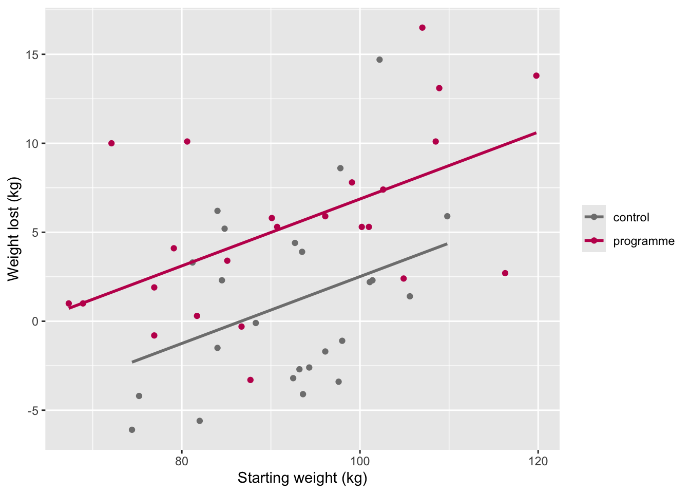
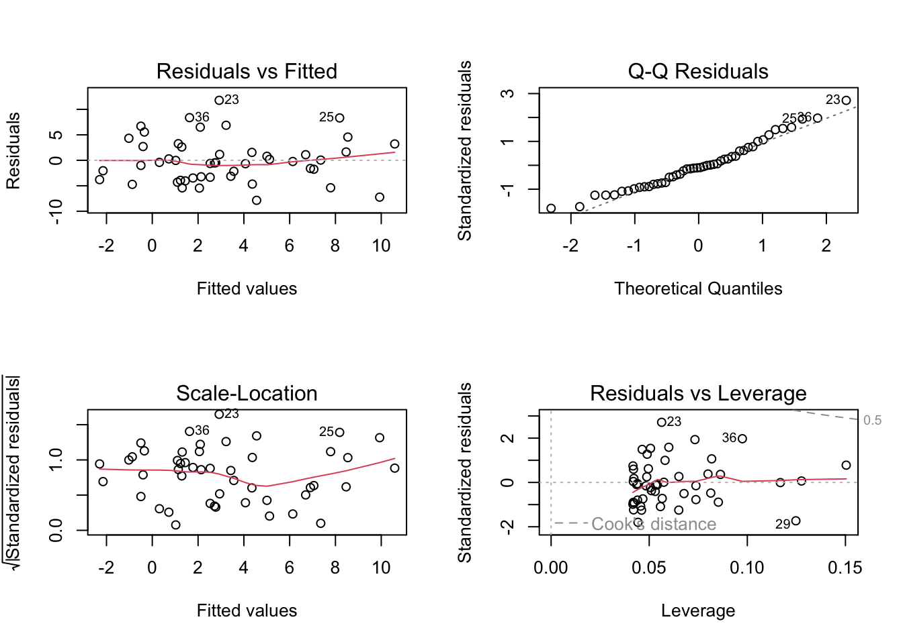

renv::install("emmeans")
renv::snapshot()Seminar 4 — The Linear Model
PSY40760 Advanced Data Analysis and Statistics in R
Worksheet 4
Running example: the 12-week weight-loss trial from Seminars 2–3. Trial A has 48 participants (24 per group); each row is one person, with their group, sex, age, starting weight (
baseline_kg) and weight lost (loss_kg).
Session at a glance
| Date | Wednesday 11 November 2026 |
| Room | QUI-115 |
| Time | 170 min |
| Staff | Dr Ondrej Zika, Cameron McCabe |
| Theory | the equation of a line; data = model + error; least squares and R²; the CI and p-value of a slope; categorical predictors and dummy coding; post-hoc tests and multiple comparisons; multiple regression and centring; what to adjust for; checking and reporting lm() |
| Practical | The practical closely mirrors the lecture. |
Before you arrive
1. Environment
Get this week’s files: download them, do not clone the repository. Inside your existing course folder psy40760-practicals-2026, create a folder called seminar-04-linear-models (exact name). From GitHub, download seminar-04-worksheet.qmd and the folder seminar-04-worksheet_files (with all its files) into it, keeping the same structure:
psy40760-practicals-2026/
├── .root-practicals
├── renv.lock
├── ...
└── seminar-04-linear-models/
├── seminar-04-worksheet.qmd
└── seminar-04-worksheet_files/Do not download or clone the whole repository again: that would overwrite your earlier worksheets and your renv set-up. (Only if you cloned the repository with git in the first week: run git pull instead.)
Use the same course folder as in previous weeks (here + renv, see the environment set-up guide). lm(), confint() and t.test() are part of base R, and dplyr and ggplot2 are already installed. This week adds one package, emmeans, for post-hoc tests:
2. Reading
| Theory | Baker (2022), Research Methods Using R, Ch. 4: Statistical tests as linear models |
| Poldrack, Statistical Thinking for the 21st Century, Ch. 5: Fitting models to data and Ch. 14: The general linear model |
Part 1
Run each chunk as we go. Every subsection follows a step of the theory block. Notation is the same as on the slides: β0 is the intercept, β1 the slope, and * means “multiplied by”.
1.0 Load the packages and the data
library(here)
here::i_am(".root-practicals")
library(renv)
renv::load(here::here())- The project is out-of-sync -- use `renv::status()` for details.library(dplyr)
library(ggplot2)
library(emmeans)
trial_A_data <- read.csv(here::here("seminar-04-linear-models", "seminar-04-worksheet_files", "trial_a.csv"))
trial_A_data <- trial_A_data %>% mutate(group = factor(group, levels = c("control", "programme")))
trial_A_data %>% glimpse()Rows: 48
Columns: 6
$ id <chr> "P01", "P02", "P03", "P04", "P05", "P06", "P07", "P08", "P…
$ group <fct> control, control, control, control, control, control, cont…
$ sex <chr> "female", "female", "female", "male", "female", "female", …
$ age <int> 43, 33, 59, 47, 59, 56, 43, 50, 51, 27, 59, 32, 35, 56, 45…
$ baseline_kg <dbl> 105.6, 101.1, 82.0, 93.5, 84.8, 101.4, 88.3, 93.2, 81.2, 8…
$ loss_kg <dbl> 1.4, 2.2, -5.6, 3.9, 5.2, 2.3, -0.1, -2.7, 3.3, 2.3, -3.4,…A quick reminder of the data: weight lost in each group, with the group means.
trial_A_data %>%
group_by(group) %>%
summarise(n = n(), mean_loss = mean(loss_kg), sd_loss = sd(loss_kg))# A tibble: 2 × 4
group n mean_loss sd_loss
<fct> <int> <dbl> <dbl>
1 control 24 1.00 5.00
2 programme 24 5.37 5.00ggplot(trial_A_data, aes(x = group, y = loss_kg)) +
geom_jitter(width = 0.1, alpha = 0.6) +
stat_summary(fun = mean, geom = "crossbar", width = 0.4, colour = "#C2185B") +
labs(x = NULL, y = "Weight lost (kg)")
Check: which group lost more weight on average, and by roughly how much?
1.1 The equation of a line
A line is y = β0 + β1 * x. Pick any β0 and β1 and you can predict y for any x. Try it by hand for three people:
beta0 <- 2 # where the line crosses x = 0
beta1 <- 0.5 # how much y goes up when x goes up by 1
x_values <- seq(0, 10, 1)
beta0 + beta1 * x_values [1] 2.0 2.5 3.0 3.5 4.0 4.5 5.0 5.5 6.0 6.5 7.0Check: what is the prediction at x = 0? Change beta1 to -0.5 and run it again: what changes?
1.2 The simplest model: the mean of y axis (also known as the “null” model)
A model makes a prediction for every person. The simplest one predicts the same value for everybody: the mean. The gap between what we observed and what the model predicted is the residual (data = model + error).
mean_loss <- mean(trial_A_data$loss_kg)
mean_loss[1] 3.185417residuals_mean <- trial_A_data$loss_kg - mean_loss # observed - predicted
head(residuals_mean)[1] -1.7854167 -0.9854167 -8.7854167 0.7145833 2.0145833 -0.8854167To get one number for how much the model misses overall, square each residual (so that negatives do not cancel positives) and add them up: the sum of squared residuals, SSE.
sse_mean <- sum(residuals_mean^2)
sse_mean[1] 1376.74Other ways to summarise the misses. SSE is in squared kg and grows with the number of people, so it is hard to read on its own. Two common alternatives:
- RMSE (root mean squared error): average the squared residuals, then take the square root. This brings it back to kg: roughly the typical size of a miss. It still squares the residuals, so large misses still count much more than small ones, and it always ranks models in the same order as SSE.
- MAE (mean absolute error): average the absolute residuals, with no squaring. A miss twice as large counts only twice as much, so large errors are penalised less than in SSE or RMSE.
rmse_mean <- sqrt(mean(residuals_mean^2)) # root mean squared error, in kg
rmse_mean[1] 5.355565mae_mean <- mean(abs(residuals_mean)) # mean absolute error, in kg
mae_mean[1] 4.284809Check: which is larger, RMSE or MAE? Why does squaring make it so? (In this course we stay with SSE: it is what lm() minimises.)
lm() fits the same model if you give it no predictor, only an intercept (~ 1):
m0 <- lm(loss_kg ~ 1, data = trial_A_data)
coef(m0) # the intercept is the mean(Intercept)
3.185417 sum(residuals(m0)^2) # the same SSE[1] 1376.74Check: is coef(m0) the same as mean_loss?
1.3 A better model: a straight line
Now let starting weight predict weight loss: loss = β0 + β1 * baseline + ε. The formula loss_kg ~ baseline_kg reads “loss is predicted by baseline weight”; R adds the intercept for you.
m1 <- lm(loss_kg ~ baseline_kg, data = trial_A_data)
coef(m1)(Intercept) baseline_kg
-14.1123892 0.1880196 - β1 (
baseline_kg) is the extra weight lost for each extra kg of starting weight. - β0 (
(Intercept)) is the prediction for someone who weighs 0 kg. That makes no sense here; we fix it with centring in 1.9.
Plot the data and the fitted line:
ggplot(trial_A_data, aes(x = baseline_kg, y = loss_kg)) +
geom_point() +
geom_smooth(method = "lm", se = FALSE, colour = "#C2185B") +
labs(x = "Starting weight (kg)", y = "Weight lost (kg)")`geom_smooth()` using formula = 'y ~ x'
Check: complete the sentence: “For every extra 10 kg of starting weight, people lost about ___ kg more.”
Your turn. What weight loss does this line predict for someone who starts at 2,000 kg? Then plot it: the data, the fitted line extended all the way to 2,000 kg, and the predicted point. No code is given this time. Hints: use the two numbers from coef(m1) (β0 + β1 * 2000), or predict() with newdata; geom_abline() draws a line across the whole plot, and xlim() / ylim() widen the axes.
# your code hereCheck: is the prediction believable? The data cover starting weights of about 67 to 120 kg only. What does this tell you about using a fitted line outside the range of the data?
1.4 Least squares, step by step
Least squares picks the line with the smallest SSE. Let’s do it by hand. Step 1: one candidate line, with slope 0.50 through the two means. For each person: prediction, residual, squared residual.
x <- trial_A_data$baseline_kg
y <- trial_A_data$loss_kg
slope_try <- 0.50
intercept_try <- mean(y) - slope_try * mean(x) # makes the line pass through the two means
by_hand <- data.frame(x = x, y = y) %>%
mutate(y_hat = intercept_try + slope_try * x, # prediction
e = y - y_hat, # residual
e_sq = e^2) # squared residual
head(by_hand, 5) x y y_hat e e_sq
1 105.6 1.4 9.9854167 -8.58541667 73.70937934
2 101.1 2.2 7.7354167 -5.53541667 30.64083767
3 82.0 -5.6 -1.8145833 -3.78541667 14.32937934
4 93.5 3.9 3.9354167 -0.03541667 0.00125434
5 84.8 5.2 -0.4145833 5.61458333 31.52354601sum(by_hand$e_sq) # SSE of this line[1] 1817.025Step 2: put the same recipe in a function, so that we can score any slope.
sse_for_slope <- function(slope) {
intercept <- mean(y) - slope * mean(x)
sum((y - (intercept + slope * x))^2)
}
sse_for_slope(0.50)[1] 1817.025sse_for_slope(0.10)[1] 1180.652Check: which of the two slopes gives the better line?
Your turn. Plot the data with both candidate lines, slope 0.50 and slope 0.10, each passing through the two means. Does the line with the smaller SSE also look like the better fit? No code is given. Hints: compute each intercept as in Step 1, then add one geom_abline() per line to the scatter plot from 1.3, in two different colours.
# your code hereStep 3: score many slopes and plot them. The SSEs trace a U, and least squares picks the bottom.
sweep <- data.frame(slope = seq(-0.3, 0.7, by = 0.01))
sweep$sse <- sapply(sweep$slope, sse_for_slope)
ggplot(sweep, aes(x = slope, y = sse)) +
geom_line() +
labs(x = "Slope β1", y = "SSE")
sweep[which.min(sweep$sse), ] # the bottom of the U slope sse
50 0.19 1125.645Step 4: the bottom has a formula, β1 = cov(x, y) / var(x) and β0 = mean(y) - β1 * mean(x).
beta1 <- cov(x, y) / var(x)
beta0 <- mean(y) - beta1 * mean(x)
c(beta0 = beta0, beta1 = beta1) beta0 beta1
-14.1123892 0.1880196 coef(m1) # identical(Intercept) baseline_kg
-14.1123892 0.1880196 You can also explore this in the least-squares explorer.
1.5 How good is the line? R²
R² compares the SSE of the line with the SSE of the mean: the share of the variation that the line explains.
sse_line <- sum(residuals(m1)^2)
sse_line[1] 1125.6171 - sse_line / sse_mean # R-squared[1] 0.182404Check: in words, what share of the differences in weight loss does starting weight explain?
1.6 A 95% CI for the slope
Another sample would give another line, so the slope has a standard error (SE). The CI uses the recipe from Seminar 2: estimate ± t_crit * SE, with n - 2 degrees of freedom because the line has two parameters.
Where does the SE come from? It is the noise around the line, s_e, divided by how spread out starting weight is. Compute both parts by hand:
s_e <- sqrt(sse_line / (nrow(trial_A_data) - 2)) # typical distance of a point from the line
spread_x <- sqrt(sum((x - mean(x))^2)) # grows with the spread of x and with n
s_e / spread_x # the SE of the slope[1] 0.05869168Check: what would happen to the SE if everyone had a similar starting weight?
summary() gives the same number:
se_beta1 <- summary(m1)$coefficients["baseline_kg", "Std. Error"]
se_beta1[1] 0.05869168df <- nrow(trial_A_data) - 2
t_crit <- qt(0.975, df)
t_crit[1] 2.012896c(lower = beta1 - t_crit * se_beta1, upper = beta1 + t_crit * se_beta1) lower upper
0.0698794 0.3061599 confint(m1) # the same, for every coefficient 2.5 % 97.5 %
(Intercept) -25.0758990 -3.1488794
baseline_kg 0.0698794 0.3061599Check: does the CI include 0?
1.7 From the slope to a p-value, then summary()
Under H0 the true slope is 0. t counts how many SEs our estimate is away from 0; the p-value is the probability of a t at least that far from 0, in either direction, if H0 were true.
t_value <- beta1 / se_beta1
t_value[1] 3.2035142 * pt(-abs(t_value), df) # two tails of the t distribution with n - 2 df[1] 0.002466411summary() reports all of this at once:
summary(m1)
Call:
lm(formula = loss_kg ~ baseline_kg, data = trial_A_data)
Residuals:
Min 1Q Median 3Q Max
-7.6383 -4.2556 0.4786 3.0488 10.5562
Coefficients:
Estimate Std. Error t value Pr(>|t|)
(Intercept) -14.11239 5.44664 -2.591 0.01278 *
baseline_kg 0.18802 0.05869 3.204 0.00247 **
---
Signif. codes: 0 '***' 0.001 '**' 0.01 '*' 0.05 '.' 0.1 ' ' 1
Residual standard error: 4.947 on 46 degrees of freedom
Multiple R-squared: 0.1824, Adjusted R-squared: 0.1646
F-statistic: 10.26 on 1 and 46 DF, p-value: 0.002466Find each number you computed by hand:
- Estimate: β0 and β1 (1.4)
- Std. Error: their SEs (1.6)
- t value: Estimate / SE (above)
- Pr(>|t|): the p-value for H0: β = 0 (above)
- Residual standard error: the SD of the residuals
- Multiple R-squared: the R² from 1.5
1.8 Group as a predictor: dummy coding
The equation stays loss = β0 + β1 * x + ε, but x is now a 0/1 dummy: 1 for programme, 0 for control. Then β0 is the control mean and β1 is the difference, programme − control. Build the dummy by hand:
trial_A_data <- trial_A_data %>%
mutate(programme = ifelse(group == "programme", 1, 0))
trial_A_data %>% select(group, programme, loss_kg) %>% slice(c(1:3, 25:27)) # 3 rows from each group group programme loss_kg
1 control 0 1.4
2 control 0 2.2
3 control 0 -5.6
4 programme 1 16.5
5 programme 1 10.1
6 programme 1 5.9Fit the model and compare its coefficients with the two group means:
m_dummy <- lm(loss_kg ~ programme, data = trial_A_data)
coef(m_dummy)(Intercept) programme
1.004167 4.362500 trial_A_data %>%
group_by(group) %>%
summarise(mean_loss = mean(loss_kg))# A tibble: 2 × 2
group mean_loss
<fct> <dbl>
1 control 1.00
2 programme 5.37Check: which coefficient equals the control mean? What do you get if you add the two coefficients?
R builds the dummy for you when the predictor is a factor. The first level (control) is the reference:
m_group <- lm(loss_kg ~ group, data = trial_A_data)
coef(m_group) # same numbers as m_dummy (Intercept) groupprogramme
1.004167 4.362500 head(model.matrix(m_group)) # the 0/1 column R built (Intercept) groupprogramme
1 1 0
2 1 0
3 1 0
4 1 0
5 1 0
6 1 0The t-test from Seminar 2 is this same model (var.equal = TRUE gives the classic Student’s t-test):
summary(m_group)$coefficients Estimate Std. Error t value Pr(>|t|)
(Intercept) 1.004167 1.019894 0.9845794 0.329981247
groupprogramme 4.362500 1.442348 3.0245822 0.004064669t.test(loss_kg ~ group, data = trial_A_data, var.equal = TRUE)
Two Sample t-test
data: loss_kg by group
t = -3.0246, df = 46, p-value = 0.004065
alternative hypothesis: true difference in means between group control and group programme is not equal to 0
95 percent confidence interval:
-7.265796 -1.459204
sample estimates:
mean in group control mean in group programme
1.004167 5.366667 Same t, same df, same p; t.test() only subtracts the groups in the other order.
To make programme the reference instead, use relevel(). The sign flips; the fit does not change:
coef(lm(loss_kg ~ relevel(group, ref = "programme"), data = trial_A_data)) (Intercept)
5.366667
relevel(group, ref = "programme")control
-4.362500 Three groups. For the next two sections we use the hypothetical three-arm diet trial from the theory block: 20 people on no diet, 20 on low-carb and 20 on low-fat. The data are simulated, so we know how they were made; set.seed(4) gives the same numbers as in the theory block.
set.seed(4)
diet_data <- data.frame(diet = factor(rep(c("none", "low-carb", "low-fat"), each = 20),
levels = c("none", "low-carb", "low-fat")))
diet_data$loss_kg <- c(1, 4, 2.5)[as.integer(diet_data$diet)] + rnorm(60, mean = 0, sd = 4)
diet_data %>%
group_by(diet) %>%
summarise(n = n(), mean_loss = mean(loss_kg))# A tibble: 3 × 3
diet n mean_loss
<fct> <int> <dbl>
1 none 20 2.51
2 low-carb 20 5.22
3 low-fat 20 2.48A factor with 3 levels becomes 3 − 1 = 2 dummies. Each coefficient compares one diet with the reference, none:
m_diet <- lm(loss_kg ~ diet, data = diet_data)
coef(m_diet) (Intercept) dietlow-carb dietlow-fat
2.50518512 2.71852533 -0.03005764 Check: none mean + dietlow-carb coefficient = ? Compare with the low-carb mean above.
The numeric-coding trap: if diet were stored as the numbers 1, 2, 3, lm() would fit one straight line through them instead of three means.
diet_data$diet_number <- as.integer(diet_data$diet) # 1, 2, 3
coef(lm(loss_kg ~ diet_number, data = diet_data)) # one slope: wrong model(Intercept) diet_number
3.43139865 -0.01502882 class(diet_data$diet_number) # "integer": always check, then use factor()[1] "integer"1.9 Which diets differ? Post-hoc tests
m_diet compares each diet with none, but not low-carb with low-fat. The overall F-test says only that some means differ:
anova(m_diet)Analysis of Variance Table
Response: loss_kg
Df Sum Sq Mean Sq F value Pr(>F)
diet 2 99.64 49.820 3.7552 0.02938 *
Residuals 57 756.22 13.267
---
Signif. codes: 0 '***' 0.001 '**' 0.01 '*' 0.05 '.' 0.1 ' ' 1Step 1: every pair by hand. Three groups give three pairs. For each pair: difference / SE = t, with the residual df of the model.
means <- tapply(diet_data$loss_kg, diet_data$diet, mean)
s <- sigma(m_diet) # residual SD of the model
df_d <- df.residual(m_diet) # 60 - 3 = 57
se_d <- s * sqrt(1/20 + 1/20) # SE of a difference between two means of 20
pairs_by_hand <- data.frame(
pair = c("low-carb vs none", "low-fat vs none", "low-carb vs low-fat"),
diff = c(means["low-carb"] - means["none"],
means["low-fat"] - means["none"],
means["low-carb"] - means["low-fat"])
)
pairs_by_hand <- pairs_by_hand %>%
mutate(t = diff / se_d,
p = 2 * pt(-abs(t), df_d))
pairs_by_hand pair diff t p
1 low-carb vs none 2.71852533 2.36019126 0.02171121
2 low-fat vs none -0.03005764 -0.02609568 0.97927217
3 low-carb vs low-fat 2.74858297 2.38628695 0.02036262Step 2: why correct? Each test has a 5% false-positive rate, but the chance of at least one false positive in m tests is 1 - 0.95^m:
m_tests <- c(1, 3, 6, 10)
data.frame(tests = m_tests, chance_of_a_false_positive = 1 - 0.95^m_tests) tests chance_of_a_false_positive
1 1 0.0500000
2 3 0.1426250
3 6 0.2649081
4 10 0.4012631Step 3: correct the p-values. Bonferroni multiplies each p by the number of tests; Holm does the same in steps and is never worse. p.adjust() does both:
pairs_by_hand %>%
mutate(p_bonferroni = p.adjust(p, method = "bonferroni"),
p_holm = p.adjust(p, method = "holm")) pair diff t p p_bonferroni
1 low-carb vs none 2.71852533 2.36019126 0.02171121 0.06513364
2 low-fat vs none -0.03005764 -0.02609568 0.97927217 1.00000000
3 low-carb vs low-fat 2.74858297 2.38628695 0.02036262 0.06108787
p_holm
1 0.06108787
2 0.97927217
3 0.06108787Check: which pairs are below .05 before correction, and which after?
Step 4: the same in emmeans. emmeans() gives the mean of each group from the model; pairs() compares every pair, with Tukey’s correction by default:
emm <- emmeans(m_diet, ~ diet)
emm diet emmean SE df lower.CL upper.CL
none 2.51 0.814 57 0.874 4.14
low-carb 5.22 0.814 57 3.593 6.85
low-fat 2.48 0.814 57 0.844 4.11
Confidence level used: 0.95 pairs(emm) # Tukey (default) contrast estimate SE df t.ratio p.value
none - (low-carb) -2.7185 1.15 57 -2.360 0.0557
none - (low-fat) 0.0301 1.15 57 0.026 0.9996
(low-carb) - (low-fat) 2.7486 1.15 57 2.386 0.0524
P value adjustment: tukey method for comparing a family of 3 estimates pairs(emm, adjust = "holm") # Holm, as in Step 3 contrast estimate SE df t.ratio p.value
none - (low-carb) -2.7185 1.15 57 -2.360 0.0611
none - (low-fat) 0.0301 1.15 57 0.026 0.9793
(low-carb) - (low-fat) 2.7486 1.15 57 2.386 0.0611
P value adjustment: holm method for 3 tests confint(pairs(emm)) # differences with Tukey-adjusted 95% CIs contrast estimate SE df lower.CL upper.CL
none - (low-carb) -2.7185 1.15 57 -5.4903 0.0532
none - (low-fat) 0.0301 1.15 57 -2.7417 2.8018
(low-carb) - (low-fat) 2.7486 1.15 57 -0.0232 5.5204
Confidence level used: 0.95
Conf-level adjustment: tukey method for comparing a family of 3 estimates emmeans writes each pair as first − second, so some signs are flipped compared with our table.
1.10 Two predictors: multiple regression and centring
Back to Trial A. Add starting weight to the group model. Each coefficient is now the effect of one predictor with the other held constant.
m2 <- lm(loss_kg ~ group + baseline_kg, data = trial_A_data)
summary(m2)$coefficients Estimate Std. Error t value Pr(>|t|)
(Intercept) -16.2807817 4.95908227 -3.283023 0.0019912084
groupprogramme 4.3593684 1.28924930 3.381323 0.0015009342
baseline_kg 0.1878969 0.05298924 3.545944 0.0009268942The intercept (about −16 kg) is the prediction for a control participant who weighs 0 kg. Centring moves zero to a meaningful value: subtract the mean starting weight, and the intercept becomes the prediction for a control participant of average weight.
trial_A_data <- trial_A_data %>%
mutate(baseline_c = baseline_kg - mean(baseline_kg))
m2_c <- lm(loss_kg ~ group + baseline_c, data = trial_A_data)
cbind(raw = coef(m2), centred = coef(m2_c)) raw centred
(Intercept) -16.2807817 1.0057325
groupprogramme 4.3593684 4.3593684
baseline_kg 0.1878969 0.1878969Check: which coefficient changed, and which stayed the same?
In a randomised trial the group estimate barely moves when we add the covariate, but starting weight explains part of the noise, so the CI for the group effect gets narrower:
confint(m_group)["groupprogramme", ] # without the covariate 2.5 % 97.5 %
1.459204 7.265796 confint(m2)["groupprogramme", ] # with the covariate 2.5 % 97.5 %
1.762687 6.956050 Two parallel lines, one per group:
trial_A_data$fitted_m2 <- fitted(m2)
ggplot(trial_A_data, aes(x = baseline_kg, y = loss_kg, colour = group)) +
geom_point() +
geom_line(aes(y = fitted_m2), linewidth = 1) +
scale_colour_manual(values = c(control = "grey50", programme = "#C2185B")) +
labs(x = "Starting weight (kg)", y = "Weight lost (kg)", colour = NULL)
1.11 What to adjust for: a collider, simulated
Whether a variable belongs in the model is a causal question. Here we simulate a trial where we know the truth: the programme causes 4 kg of extra loss. People drop out unless they are in the programme or are losing weight, so “completed” is caused by both group and loss: a collider.
set.seed(4)
n <- 2000
sim <- data.frame(programme = rep(0:1, each = n / 2))
sim$loss <- 4 * sim$programme + rnorm(n, 0, 5)
sim$completed <- as.numeric(sim$programme + sim$loss / 5 + rnorm(n, 0, 1) > 1)Now estimate the programme effect three ways:
coef(lm(loss ~ programme, data = sim))["programme"] # everyoneprogramme
4.294022 coef(lm(loss ~ programme, data = sim %>% filter(completed == 1)))["programme"] # completers onlyprogramme
1.597658 coef(lm(loss ~ programme + completed, data = sim))["programme"] # adjusting for completionprogramme
1.440347 Check: which estimate is close to the true 4 kg? Analysing only completers, or adding completed as a predictor, creates a false association. Analyse everyone as randomised.
1.12 Checking the model
plot() on a fitted lm draws four diagnostic plots. The theory block showed what problems look like.
par(mfrow = c(2, 2))
plot(m2)
par(mfrow = c(1, 1))Read them one at a time:
| Plot | Looks fine if… | A problem looks like… |
|---|---|---|
| Residuals vs Fitted | a flat, even band around 0 | a curve (non-linearity) or a funnel (unequal variance) |
| Q–Q Residuals | points close to the dashed line | ends that bend away (skew, heavy tails) |
| Scale-Location | a flat line, even spread | a rising line (variance grows with the fitted value) |
| Residuals vs Leverage | no point beyond the Cook’s distance lines | one point far out, labelled with its row number |
Check: for m2, write one sentence per plot.
predict() gives the model’s prediction for new values, for example a programme participant who starts at 100 kg:
new_person <- data.frame(group = factor("programme", levels = c("control", "programme")), baseline_kg = 100)
predict(m2, newdata = new_person, interval = "confidence") fit lwr upr
1 6.868276 4.843716 8.8928361.13 Reporting an lm() result
A report gives each estimate in its units, with a 95% CI, then the test: t(df) and the exact p. Collect the numbers:
summary(m2)$coefficients # estimates, SEs, t, p Estimate Std. Error t value Pr(>|t|)
(Intercept) -16.2807817 4.95908227 -3.283023 0.0019912084
groupprogramme 4.3593684 1.28924930 3.381323 0.0015009342
baseline_kg 0.1878969 0.05298924 3.545944 0.0009268942confint(m2) # 95% CIs 2.5 % 97.5 %
(Intercept) -26.26888608 -6.2926773
groupprogramme 1.76268700 6.9560498
baseline_kg 0.08117109 0.2946227df.residual(m2) # df for t[1] 45summary(m2)$r.squared # R²[1] 0.3480482summary(m2)$adj.r.squared # adjusted R²[1] 0.3190725Find each of these numbers in the example report from the theory block:
“We regressed weight loss (kg) on group (reference: control) and starting weight (kg) using
lm()in R 4.4.0. In the 48 participants, the programme group lost 4.36 kg more than the control group at the same starting weight, 95% CI [1.76, 6.96], t(45) = 3.38, p = .002. Each additional kilogram of starting weight was associated with 0.19 kg more weight loss, 95% CI [0.08, 0.29], t(45) = 3.55, p < .001. The model explained 35% of the variance (adjusted R² = .32). Residual plots showed no non-linearity, unequal variance or influential participants.”
Avoid “a significant effect of group (p < .05)” with no estimate or CI.
Part 2: DataCamp
This week’s course:
Part 3: Exercises in RStudio
The exercises repeat the steps of Part 1 on a new data set, and this time no code is given: write every chunk yourself. Each exercise names the walkthrough section it mirrors (in brackets); if you get stuck, copy the code from there and adapt it.
The study. 120 students took part in a reaction-time experiment. Each was randomly given a drink with no caffeine (placebo), a low dose or a high dose of caffeine (40 per group), reported how many hours they had slept the night before (sleep_h), and then did a simple reaction-time task (rt_ms, mean reaction time in milliseconds; lower is faster). The data are simulated. Run this chunk to create them (no changes needed):
set.seed(2045)
n <- 40
rt_data <- data.frame(
id = sprintf("S%03d", 1:(3 * n)),
dose = factor(rep(c("placebo", "low", "high"), each = n), levels = c("placebo", "low", "high")),
age = sample(18:35, 3 * n, replace = TRUE),
sleep_h = round(rnorm(3 * n, mean = 7, sd = 1.2), 1)
)
rt_data$rt_ms <- round(420 - 15 * (rt_data$sleep_h - 7) +
c(0, -12, -30)[as.integer(rt_data$dose)] +
rnorm(3 * n, mean = 0, sd = 35))Exercise 1 — First look [mirrors 1.0]
Look at the data with glimpse(). How many people are in each dose group, and what is the mean reaction time in each? Then plot reaction time against hours of sleep.
# your code hereExercise 2 — The mean as a model [mirrors 1.2]
Use the mean reaction time as the model for everyone. Compute the residuals, the SSE and the RMSE. Fit the same model with lm() and confirm that the intercept is the mean and that the SSE is the same.
# your code hereCheck: in words, what does the RMSE tell you about the typical miss of this model, in ms?
Exercise 3 — A line [mirrors 1.3]
Fit a model in which hours of sleep predict reaction time. Print the coefficients and plot the data with the fitted line. Then use the line to predict the reaction time of someone who slept 7 hours, and of someone who slept 0 hours.
# your code hereCheck: complete the sentence: “For every extra hour of sleep, reaction time was about ___ ms ___ (faster/slower).” Which of your two predictions do you trust less, and why?
Exercise 4 — Least squares by hand [mirrors 1.4]
Write a function that returns the SSE of a line through the two means for any slope. Score the slopes from −40 to 10 in steps of 0.5, plot SSE against slope, and find the bottom of the U. Then compute β1 and β0 with the formula and compare them with coef().
# your code hereExercise 5 — R² [mirrors 1.5]
Compute R² from the SSE of the mean model (Exercise 2) and the SSE of the line (Exercise 3), and compare it with summary().
# your code hereCheck: what share of the differences in reaction time does sleep account for?
Exercise 6 — CI and p-value of the slope [mirrors 1.6–1.7]
For the sleep slope: compute s_e and the SE by hand, build the 95% CI by hand, and compare it with confint(). Then compute t and the two-sided p-value by hand, and compare them with summary().
# your code hereCheck: does the CI include 0? What does the p-value tell you, in one sentence?
Exercise 7 — Dose as a predictor [mirrors 1.8]
Fit a model with dose as the only predictor. Compute the three group means and match each coefficient to them.
# your code hereCheck: which group is the reference? What does the coefficient dosehigh mean, in words and in ms?
Exercise 8 — Which doses differ? [mirrors 1.9]
Compare every pair of doses with emmeans, first with the Tukey correction and then with Holm. Get the confidence intervals of the differences.
# your code hereCheck: which pairs differ after correction? Write one sentence for the clearest difference, with its estimate and 95% CI.
Exercise 9 — Two predictors and centring [mirrors 1.10]
Add hours of sleep to the dose model. Compare the CI for dosehigh with and without sleep in the model. Then centre sleep_h, refit, and compare the two sets of coefficients side by side.
# your code hereCheck: what does the intercept mean in the centred model? Which coefficients changed when you centred, and which did not?
Exercise 10 — Diagnostics [mirrors 1.12]
Draw the four diagnostic plots for the model with dose and sleep, and use the table in 1.12 to write one sentence per plot.
# your code hereExercise 11 — Report it [mirrors 1.13]
Collect the numbers you need for the model with dose and sleep, and write a short results paragraph in the style of 1.13: the high-dose effect and the sleep effect, each with its estimate, 95% CI, t, degrees of freedom and p, and the R² of the model.
# your code hereYour paragraph:
Extra (optional)
- A confounder. Simulate an observational study (n = 2,000):
motivation <- rnorm(n); exercise hours depend on motivation (exercise <- 2 + motivation + rnorm(n)); weight loss depends on both (loss <- 0.5 * exercise + 2 * motivation + rnorm(n, 0, 3)). The true effect of exercise is 0.5 kg per hour. Fitloss ~ exerciseandloss ~ exercise + motivation. Which one recovers 0.5, and why? - Numbers instead of a factor. Fit
rt_ms ~ as.integer(dose)to the Part 3 data. Why is the result meaningless? - Interactive: use the least-squares explorer to find the minimum SSE by dragging the line before pressing Fit by least squares.
Where to get help
Ask on the PSY40780 module forum (tag Ondrej or Cameron) any time before the session, or bring questions to the practical — Cameron is there specifically for this.